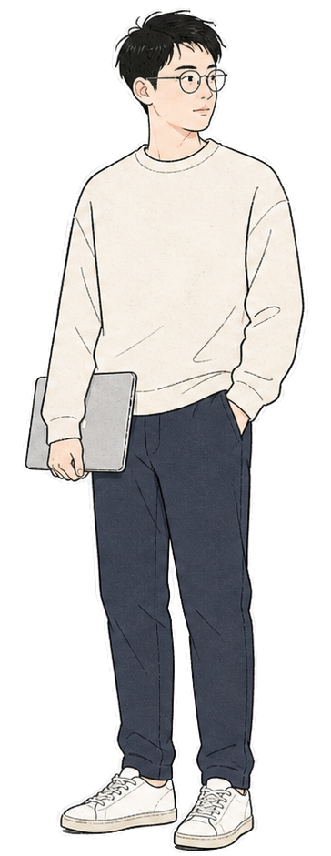

申名翀 Ethan
中国上海
中国上海
财富与资产管理工作流
2020.12 — 2022.06
金融学硕士，资产管理方向 · GPA 3.95 / 4.0 · Beta Gamma Sigma
衍生品 · 随机过程 · 风险管理 · 固定收益 · Python · SQL
债券 · 交易 · 风控
Agent 辅助系统

向下滚动产品现场、AI 实验和一些暂时没有答案的问题——趁它们还热，先写下来。
从债券与资管业务出发，把复杂判断做成真正可用的产品与 AI 工作流。
负责全资产资管平台客户端产品设计，覆盖投研、交易、风控链路； 构建多场景工作台，让用户在一个页面完成从簿记到风控测算的交易生命周期操作。
推进“AI+资管”中试基地 Agent 场景和产品经理 Agent 设计， 将业务探查、信息收集、数据依赖和产品判断拆成可复用流程。
负责债券经纪商行情筛选 Agent，让用户通过自然语言完成多维度债券筛选和过滤； 参与 Chat 后端与问财 AI 对接测试、竞品效果对比和评分标注。
设计债券信用分析、成交偏离监控、信用债曲线定价和自动化场外交易产品。 金融 Q 使用 NLP + LLM 标准化投资经理、交易员、做市商和 Broker 之间的指令流转， 将报价触发从约 1 分钟压缩到 1 秒，将成交单梳理从约 30 分钟缩短到 2 分钟。
把模型能力做成可以参与的故事、随身的任务入口和日常使用的工具。
让读者参与故事的发展。写作、编辑、记忆管理与选项生成等 Agent 协作，探索持续演进的互动小说体验。
打开网站探索通过千问眼镜用语音向电脑上的 Agent 布置任务，并查看进度、确认操作、获取结果。持续开发中。
以人的收藏作为信息质量信号，把散落的优质链接整理成可检索的知识，通过 MCP 接入个人 Agent。
基于 Jev Ultrafast 改造浏览器自动化：Jev 判断页面操作，当前 Codex 对话在需要输入时提供文本，再继续执行。
查看源码覆盖投研、交易与风控流程的 AI 原生财富与资产管理工作台。
使用自然语言、NLP 与 LLM 辅助工作流完成债券筛选和场外交易自动化。
公开仓库是我的实验室：把产品方法、Agent 能力和个人 IP 系统沉淀成可复用资产。
把照片或文字描述转化为个人 IP 系统的可复用工作流。
产品经理技能库与实战方法论，把需求分析、竞品研究和复盘沉淀为结构化能力。
麦当劳点餐助手，支持 OpenClaw、Claude Code 等 Agent 框架的实用技能。
从基础到项目实践的后端学习路线与项目库，记录系统学习的回路。
GitHub · EthanSMC
正在加载贡献记录
最近在探索 Agent 的不同入口：眼镜、收藏与浏览器。
探索语音布置任务、进度反馈与操作确认，打磨可穿戴设备和电脑 Agent 之间的交互。
将人的筛选与 Agent 的整理连接起来，持续完善收藏、检索和 MCP 接入体验。
开源 Codex 文本交接机制，记录真实浏览器任务中的验证结果与能力边界。
持续记录产品判断、Agent 实验与踩坑经历，沉淀为文章、Skill 和工作流。
所在地中国上海